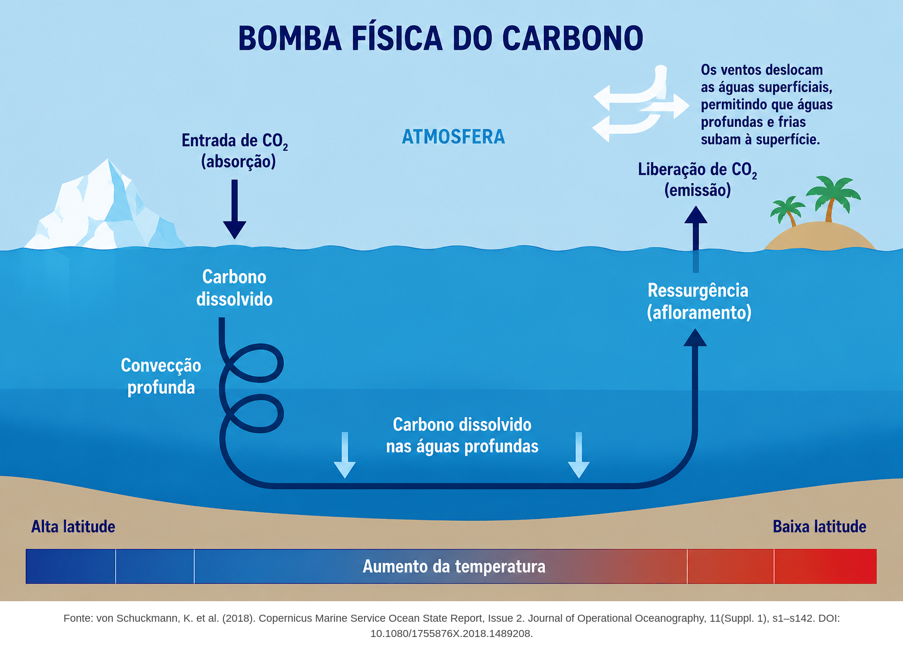

INICIAR MISSÃO OCEANO
OCEAN RECON // LOW ALTITUDE SURVEY
OCEAN CAM 01 - LIVE
AIRSPEED: 850 KTS
ALTITUDE: 12,000 FT
PITCH: -4.2°
ROLL: +1.0°
SYS: AUTOPILOT / SURFACE STABILITY
HDG: 045° (NE)
LAT: 62°15'10" N
LON: 25°40'12" W
SURFACE: ATLÂNTICO NORTE (SAUDÁVEL)
SISTEMA GAIA - MISSÃO OCEANO
Avançar >>

Sistema Atmosfera e Oceano
LOUSA DE CÁLCULOS
TEXTO
DESENHO
APAGAR
Análise Gráfica do Fluxo de CO₂:
F(C
oce
) = k(1 - C
oce
)
GAIA - MODELAGEM DA REMOÇÃO DE CARBONO PELOS OCEANOS
Avançar >>
DESAFIO 1
VOLTAR